N-grams have been extensively used with phonemes or words as basic units in speech recognition. Recently, it has been proposed to use n-grams with phrase tree structures as units to increase speech recognition quality.
In order to test this idea on Chinese, a treebank of Chinese hotel reservation conversation utterances is needed. Because no such treebank is yet available, we have to build it.
We propose to see the process of building a tree-bank as a sequence of edition and search operations:
This way of doing will have a benefic "snow-ball" effect: the bigger the treebank, the faster and the more consistent its extension.
| 1 Editing functions | |
| 1.1 Inputting Chinese | |
| 1.2 Editing trees | |
| 1.3 Correspondences | |
| 2 Parsing helps | |
| 2.1 Matching | |
| 2.2 Analysis by analogy | |
| References |
Although a few visualisation/edition tools for trees exist, they are all inadequate for our purpose, either because tree edition is too cumbersome or because the layout of trees is unfamiliar to linguists. Moreover, none of them solves the problem of inputting nonlatin characters.
We faced the problem of edition of trees, and edition of texts written in a non-English language under a specialised tool, the tree editor.
The basic problem of entering and visualising non-latin character has been solved by relying on modern computer science advances in language encoding. We chose to implement our tree editor in Java, which makes the use of ISO-10646 (Unicode) transparent. With this, the problem of editing Cninese is not different from the problem of editing Arabic, Korean, etc. Entering is solved by the use of standard IME (input method editor) developed for the language in question (e.g. Wnn). Visualising is also transparent thanks to Unicode.
With our tool, tree edition is made as simple and direct as text edition. Interactive edition is performed directly on the canvas where the tree is drawn, without any diaIogue box nor specialised menu, thanks to a rigourous parallel between node/complete subtrees on the one hand, and words/lines on the other hand.
| Text | Tree |
| word | label of node |
| -- | node |
| line | complete subtree |
This parallel is valid for all functions of edition: clicking, selecting, insertion, cut, copy, paste, etc. Some equivalences are shown in Table 1.
| Click | Effect | Place | |
| Text | Tree | ||
| Simple | position cursor in ... | word | node |
| double | select the ... | word | node |
| triple | select the ... | line | complete subtree |
| Key | Effect | Place | |
| Text | Tree | ||
| <space> | start a new ... | word | node as right sister |
| <return> | start a new ... | line | node as daughter |
| arrows | move around ... | text | tree |
Although the parallel clearly shows that a node is different from a label, people usually think that "a label is a node." To make our tool intuitive, our editor contradicts this way of thinking as little as possible,
With all this, inputting the structure
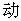
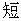
( (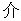
(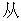
),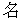
(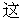
), ( (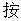
), (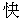
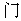
))),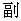
(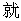
), (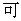
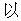
))which describes the utterance
.
is done (see Figure 2) by just typing the following sequence: <return> <return> <return> <
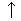
> <space> <return> <> <space> <return> <return> <> <space> <return> <> <> <space> <return> <> <space> <return>A special functionality of our tool is that links (correspondences in (Boitet and Zaharin 88)'s terms) between portions of the text and portions of the tree can be established. If these links are activated, selecting in the text (or the tree) simultaneously selects the corresponding part of the tree (or the text). In Figure 3, deleting the prepositional group in the utterance, automatically deletes the corresponding part in the structure.
The ideal way of obtaining a linguistic structure for a new utterance is to have a complete parser for the language in which the utterance is written, and to feed the utterance to this parser. Unfortunately, as parsing is still an object of research, and as precisely, we want to build a treebank to build a parser, Boardedit proposes parsing helps which gradually fill the gap between editing by hand and complete automatic parsing.
Retrieving similar utterances, which structures should supposedly be similar to the structure of the utterance at hand, should help the treebanker.
Exact matching allows to see whether the utterance did not simply exist already in the treebank.
Approximate matching comes in two flavours: either similar utterances which are at a certain edit distance of the utterance searched are looked for, or similar utterances which share a maximal longest subsequence with the utterance at hand are looked for. Figure 1 shows some possible settings for searching.
The first search is performed by an algorithm which has been shown to be faster than agrep (Wu & Manber 92). It was proposed in (Lepage 97) and became a Japanese and an American patents this year. Figure 4 gives an example of such a search. The second search is based on the algorithm described in (Hunt & Szymanski 75).
|
|
IdeaIly, the treebanker would like to automatical1y get the structure to be built. A step in this direction is made with analysis by analogy, a technique described in (Lepage 99). New structures are built by analogy with three structures corresponding with three utterances analogical to the utterance at hand. The structure obtained in this way can then be edited by hand by the treebanker to fit the utterance at hand, using the tree editing functionalities.
We presented the design and our solutions for the implementation of a tool to build a treebank of utterances of conversational Chinese. It has the fol1owing features:
|
|
|
|
|
|